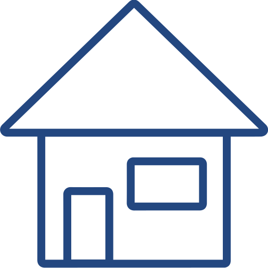

|  | ||||
|---|---|---|---|---|
| home | about | works | resume | chat |
The beer app is a mobile application that lets a user find breweries based on their location. The application also helps them connect with beer and friends.
For the fall semester of 2017, my Usability and Design class got split into groups to design an application that centred around alcohol. My group consisted of Chris and Matt (both software developers) and I, (a designer).
We needed to find places of need within the alcohol culture, otherwise, what would the point of our proposed application be? We initially did some research into some quick statistics about alcohol, and found that the craft beer industry is growing. In 2012, the craft beer market made up 10% of all beers sold, in 2015, that number increased to 19%. The trend continued, and in 2016, the number jumped to 21.9% (Snider).
Craft beer is a major part of beer sales, and there are plenty of opportunities for breweries to be a part of the market. Brand new breweries continue to pop up all over the world, and in 2016 alone, 826 new breweries opened, and only 97 were closed (Snider).
Our team proposed that this application would organise information about beers and breweries in an organised manner, to be a helpful and efficient tool.
We then noted three main user characteristics that would find our application useful. These were based on Garver’s findings:
We looked at the craft beer industry and what kind of person drinks craft beer, and what their typical demographics are, to see what kind of mental models they might have that they would bring onto our proposed app.
From Pierre and Herz, we gathered that:

We looked at the craft beer industry and what kind of person drinks craft beer, and what their typical demographics are. We used the research from above to create personas to help us really understand what will be needed when designing this app.

We made up scenarios for our three main personas. The one that we ended up focusing on is Tom:

We initially noted down main goals that a user may have, and what kind of tasks they could complete with this application.
Because most of the craft beer consumers lie in the millennial generation, we wanted to use inspiration from popular current applications that already cater to our target audience. Using the successful aspects of their application design, we will base our own designs from their usable interface. Using existing patterns from other applications will help us design our own applications, as users will bring their current mental models and will easily adjust into our own application.
The usability of an application is determined by how efficient it is to use (ie how learnable and memorable it is.) The quicker a user is able to learn how to use an application, the quicker they are able to complete a task. The more memorable the functions of an application are, the quicker the user is able to complete a task.
We looked at a few popular applications that millennials use.

We started to think about what our application would have and what it would look like (in terms of simple wireframing).
We then brainstormed different ideas and we tried not to be limited by feasible ideas. The point of this brainstorming exercise is for us to expand our horizons and see if there are any epiphanies that come up through this exercise.

We then chose to hone in on one of our stakeholders to better craft an application to cater to them and their needs. We then extended one of our personas so we could have a better understanding of their goals and needs.
Personally, I could not relate to our main stakeholder (Tom – The Beer Enthusiast). So creating an empathy map helped me understand the underlying motives and goals that this user may have.

Customer Journey maps help illustrate what a user might think and feel as they are using a product. This helps bridge between a customer's thoughts and the application's interface and software. This helps us figure out what screens we really need and what kind of tasks that could be done on these screens.
We figured out the main tasks that can be done using our app, and made customer journey maps to correspond to those. We based this off "Tom – The Beer Enthusiast."